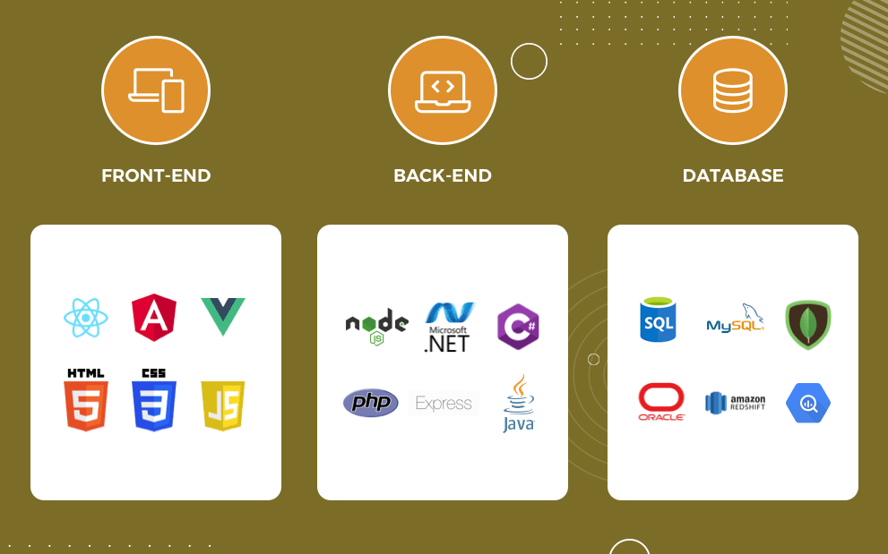

Content
- Quick Revision : HTML & CSS
- Software Development Life Cycle
- Programming Stacks Used in Web Technology
- Bootstrap Templates and Static Websites
- Career Path as a Web Developer
Quick Revision : HTML & CSS
- What is HTML ?
- What are the different HTML tags?
- What is CSS ?
- Revision of CSS properties
- Different Methods of CSS
Software Development Life Cycle
It is a process for planning, creating, testing, and deploying an Software Solution

Programming Stacks Used in Web Technology
Programming Stacks are the set of Web Technologies,Database which are used to develop web application
